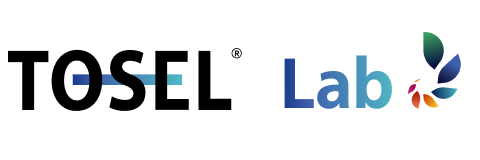
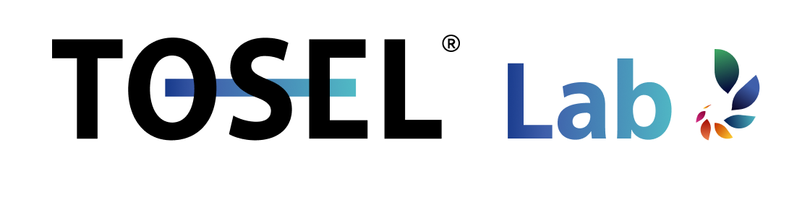
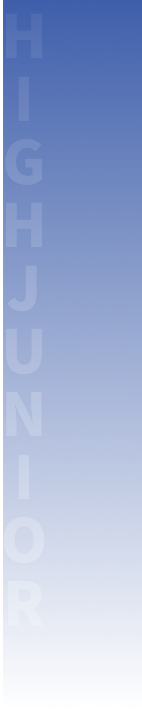
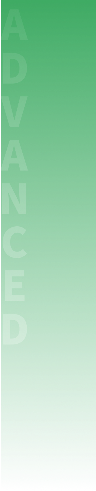
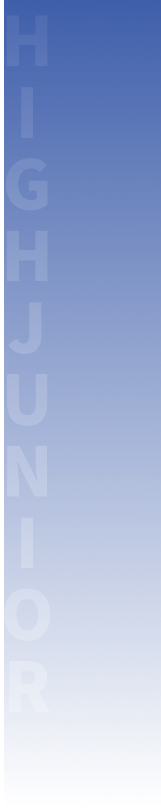
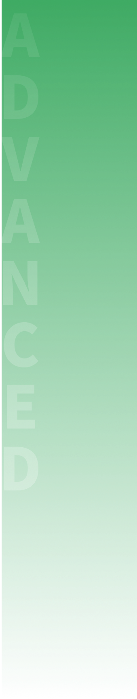

TOSEL LAB
 12년 영어학습 3년 프로젝트
스파이럴 영어 클리닉
 



TOSEL Lab는,
200만명 응시자 성적데이터를 기반으로 한 AI 분석진단을 통해 개발된 맞춤식 영어교육프로그램으로서,
정확한 진단과 AI 학습을 통하여 영어학습 시간과 노력을 획기적으로 단축하는 것을 목표로 합니다.
국제토셀위원회 고려대학교 언어정보연구소 고려대학교 출판문화원 공동기획
왜 아이들이 영어를 포기할까?
아이들이 본인의 레벨과 영어 수준을 정확히 파악하지 않은 채, 사람들의 권유나 추천으로 영어 사교육 기관에 던져지기 때문이라고 합니다. 국내 영어 교육은 영어사교육비만 5조 4,250억 원에 달하지만, 전세계 영어성취도 조사에 따르면, 200여개국 중 100위권에 그치는 고비용 저효율 교육입니다.
따라서,이러한 문제 때문에 영어를 포기하는 학생이 늘어난다는 것.
Solution?
전국적인 데이터를 토대로, 아이 성적의 위치와 공부 방향을 개별적으로 제시받고, 이를 토대로 공부할 수 있는 플랫폼이 제공된다면,
학생 본인의 결점을 보완할 수 있는 길라잡이가 될 것입니다.
About TOSEL Lab
내 아이의 영어 수준을 객관적으로 진단하고, 영어 솔루션 제안을 통한 학습 컨텐츠 제공이 필요하다는 것을 파악하여,
이제, 토셀이 20년동안의 공신력 있는 진단을 바탕으로,
학생의 영어 레벨을 측정하고 본인의 결점을 보완할 수 있는 플랫폼을 선보입니다.
1. TOSEL 평가
학생의 영어 능력을 평가 테스트를 통해 정확하게 평가하여, 결과 도출
2. 결과 분석 및 진단
시험 점수와 결과를 분석하여 학생의 강점, 취약점, 학습자 특성 등을 객관적으로 진단
3. 학습 방향 제시
객관적 진단 데이터를 기반으로 학습자 특성에 맞는 학습 방향 제시 및 목표 설정
4. 학습
제시된 방향과 목표에 따라 학생에게 적합한 콘텐츠/학습법으로 학습
5. 학습 목표 달성
학습 후 다시 평가를 통해 목표 달성 여부 확인 및 성장을 위한 다음 학습목표 설정
Contents
구체적인 컨텐츠 소개는 3월에 출시 예정입니다.
Test Contents
신규원생 상담과 반배치를 위한 Placement Test, 기존원생 상담과 반배치를 위해서는 TOSEL Test 제공

Book Contents
TOSEL의 세분화된 레벨을 토대로, 각 연령에 맞는 어휘와 교과 과정과의 연계가 가능하도록 설계된 교재
Digital Contents
영어성적을 분석한 빅데이터에 AI(인공지능)를 활용하여 세분화된 레벨로 설계한 디지털학습과정
LMS Contents
디지털학습을 통해 쌓은 데이터를 기반으로 학생의 학습 방향성을 제시할 수 있는 학습관리시스템 제공
TOSEL Lab 은 토셀의 솔루션을 제공받을 수 있는 하나의 새로운 플랫폼입니다.
What’s Good for You?
구체적인 혜택 정보를 알고 싶으시다면, 더 알아보기를 눌러보세요.
토셀 지정학원 공식 인증
TOSEL Lab 국제토셀위원회 지정학원 현판과 배너를 제공하여 학원의 홍보효과와 공신력을 높일 수 있습니다.
AI 정밀 성적분석
TOSEL의 정기 시험 결과를 분석하여 동일지역 또는 전국의 학원과의 성적을 비교할 수 있는 통계자료를 제공합니다.
반배치 레벨 테스트
TOSEL Lab에서 자체 개발한 PLACEMENT TEST를 제공하여 신규원생 상담 및 체계적 관리를 돕습니다.
TOSEL LMS 제공
학생들 영어약점을 파악하여 체계적으로 학습 관리 및 평가를 보조하고 효과적인 학습 방향을 제시합니다.
TOSEL Lab에 가입된 기관은 다르다. 전문적이다. 체계적이다.
1. 신규원생 상담과 반배치를 위한 Placement Test / 기존원생 상담과 반배치를 위한 TOSEL Test 제공
2. 국제토셀위원회가 보유하고 있는 연구소 정밀분석 데이터를 공유할 권리를 부여 받아 과학적이고 전문적인 학생, 학부모 상담
3. 공유경제의 일환으로 일선학원들은 권위있는 연구소를 보유하게 되어 가입된 학원의 전문성과 공신력 획득
4. 200만 명 응시자 빅데이터 분석에 기반한 학생 개개인의 레벨에 맞는 반편성과 교재선정 가능, 실제 영어실력 향상되는 것 검증
대한민국 인재들의 글로벌 경쟁력을 높이는 사회적 가치 실현.
1. 국제토셀위원회가 제공하는 공신력 있는 진단평가
2. 학생개인의 수준에 맞는 맞춤식 교재와 강의를 추천
3. 수준에 맞지 않은 교재와 강의에서 파생되는 영어포기 자, 학습동기부여 상실 등의 문제점을 제거 가능
TOSEL Lab에 가입하신 단체 및 기관이시라면, TOSEL Lab의 모든 혜택을 누리실 수 있습니다!
AI 정밀 성적분석, Grammar, Englisea, VOCA, 반배치 레벨테스트, Listening Series, Phonics 등 다양한 컨텐츠가 3월 신학기에 추가될 예정입니다.
지금 바로 사전예약하시고 이후에 나올 모든 혜택을 누려보세요!
가입 문의 : 서울시 성북구 안암동5가 고려대학교 라이시움 4F 02-923-0505


한 눈에 볼 수 있는 학습 현황
LMS학생의 학습현황을 쉽고 빠르게 파악. 학생이 얼마나 열심히 했으며, 어떤 학습 상황에 있는지 바로바로 체크할 수 있고, 학생관리를 더 효율적으로 진행할 수 있습니다.